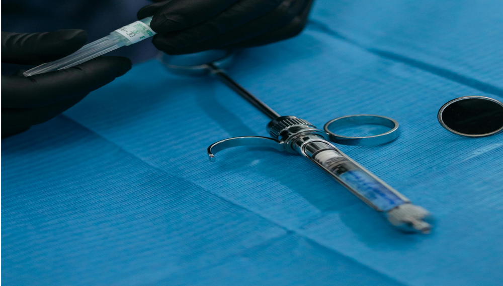

<!doctype html>
<!--[if IE 9]> <html class="no-js ie9 fixed-layout" lang="en"> <![endif]-->
<!--[if gt IE 9]><!--> <html class="no-js " lang="en"> <!--<![endif]-->
<head>
    <meta charset="utf-8">
    <meta http-equiv="X-UA-Compatible" content="IE=edge">
    <meta name="viewport" content="width=device-width, minimum-scale=1.0, maximum-scale=1.0, user-scalable=no"> 
    <title>IJBMS-Effect of pre-operative administration of oral aspirin on suxamethonium induced myalgia : Comparative Study</title>
    <meta name="keywords" content="">
    <meta name="description" content="">
    <meta name="author" content="">
    <link rel="shortcut icon" href="../../images/favicon.ico" type="image/x-icon" />
    <link rel="apple-touch-icon" href="../../images/apple-touch-icon.png">
    <link href="https://fonts.googleapis.com/css?family=Roboto:300,400,400i,500,700,900" rel="stylesheet"> 
    <link href="https://fonts.googleapis.com/css?family=Droid+Serif:400,400i,700,700i" rel="stylesheet"> 
    <link rel="stylesheet" href="../../css/bootstrap.min.css">
    <link rel="stylesheet" href="../../css/font-awesome.min.css">
    <link rel="stylesheet" href="../../css/carousel.css">
    <link rel="stylesheet" href="../../css/animate.css">
    <link rel="stylesheet" href="../../style.css">

    <!--[if lt IE 9]>
        <script src="js/vendor/html5shiv.min.js"></script>
        <script src="js/vendor/respond.min.js"></script>
    <![endif]-->

</head>
<body>  

    <!-- LOADER -->
    <div id="preloader">
        
    </div><!-- end loader -->
    <!-- END LOADER -->

    <div id="wrapper">
        <!-- BEGIN # MODAL LOGIN -->
        <div class="modal fade" id="login-modal" tabindex="-1" role="dialog" aria-hidden="true" style="display: none;">
            <div class="modal-dialog">
                <div class="modal-content">
                    <!-- Begin # DIV Form -->
                    <div id="div-forms">
                        <form id="login-form">
                            <button type="button" class="close" data-dismiss="modal" aria-label="Close">
                                <span class="flaticon-add" aria-hidden="true"></span>
                            </button>
                            <div class="modal-body">
                                <input class="form-control" type="text" placeholder="What you are looking for?" required>
                            </div>
                        </form><!-- End # Login Form -->
                    </div><!-- End # DIV Form -->
                </div>
            </div>
        </div>
        <!-- END # MODAL LOGIN -->

        <header class="header header-normal">
            <div class="topbar clearfix">
                <div class="container">
                    <div class="row-fluid">
                        <div class="col-md-6 col-sm-6 text-left">
                            <p>
                                <strong><i class="fa fa-phone"></i></strong> +91 123 4567 890 &nbsp;&nbsp;
                                <strong><i class="fa fa-envelope"></i></strong> <a href="mailto:#">submit@ijbms.in</a>
                            </p>
                        </div><!-- end left -->
                        <div class="col-md-6 col-sm-6 hidden-xs text-right">
                            <div class="social">
                                <a class="facebook" href="#" data-tooltip="tooltip" data-placement="bottom" title="Facebook"><i class="fa fa-facebook"></i></a>              
                                <a class="twitter" href="#" data-tooltip="tooltip" data-placement="bottom" title="Twitter"><i class="fa fa-twitter"></i></a>
                                <a class="google" href="#" data-tooltip="tooltip" data-placement="bottom" title="Google Plus"><i class="fa fa-google-plus"></i></a>
                                <a class="linkedin" href="#" data-tooltip="tooltip" data-placement="bottom" title="Linkedin"><i class="fa fa-linkedin"></i></a>
                                <a class="pinterest" href="#" data-tooltip="tooltip" data-placement="bottom" title="Pinterest"><i class="fa fa-pinterest"></i></a>
                            </div><!-- end social -->
                        </div><!-- end left -->
                    </div><!-- end row -->
                </div><!-- end container -->
            </div><!-- end topbar -->

            <div class="container">
                <nav class="navbar navbar-default yamm">
                    <div class="navbar-header">
                        <button type="button" class="navbar-toggle collapsed" data-toggle="collapse" data-target="#navbar" aria-expanded="false" aria-controls="navbar">
                            <span class="sr-only">Toggle navigation</span>
                            <span class="icon-bar"></span>
                            <span class="icon-bar"></span>
                            <span class="icon-bar"></span>
                        </button>
                        <div class="logo-normal">
                            <a class="navbar-brand" href="../../index.html"></a>
                        </div>
                    </div>
                    <div id="navbar" class="navbar-collapse collapse">
                        <ul class="nav navbar-nav navbar-right">
                            <li><a href="../../index.html">Home</a></li>
                            <li><a href="../../about-us.html">About Us</a></li>
                            <li class="dropdown yamm-fw yamm-half"><a href="#" data-toggle="dropdown" class="dropdown-toggle active"> Journal Category <b class="fa fa-angle-down"></b></a>
                                <ul class="dropdown-menu">
                                    <li>
                                        <div class="yamm-content clearfix">
                                            <div class="row-fluid">
                                                <div class="col-md-6 col-sm-6">
                                                    <h4>Our Journals</h4>
                                                    <ul>
                                                        <li><a href="../anaesthesiology.html">Anaesthesiology</a></li>
                                                        <li><a href="../anotomy.html">Anatomy</a></li>
                                                        <li><a href="../biochemistry.html">Biochemistry</a></li>
                                                        <li><a href="../community-medicine.html">Community Medicine</a></li>
                                                        <li><a href="../medical-education.html">Medical Education</a></li>
                                                        <li><a href="../medicine.html">Medicine</a></li>
                                                        <li><a href="../microbiology.html">Microbiology</a></li>
                                                        <li><a href="../orthopaedics.html">Orthopaedics</a></li>
                                                        <li><a href="../pathology.html">Pathology</a></li>
                                                        <li><a href="../pharmacology.html">Pharmacology</a></li>
                                                        <li><a href="../physiology.html">Physiology</a></li>
                                                        <li><a href="../psychiatry.html">Psychiatry</a></li>
                                                        <li><a href="../surgery.html">Surgery</a></li>
                                                    </ul>
                                                </div>
                                                <div class="col-md-6 col-sm-6">
                                                    <div class="menu-widget text-center">
                                                        <div class="image-wrap entry">
                                                            
                                                            <div class="magnifier">
                                                                 <a href="#" title=""><i class="flaticon-add"></i></a>
                                                            </div>
                                                        </div><!-- end image-wrap -->
                                                        <h5><a href="#">Journal</a></h5>
                                                        <a href="../../submit-journal.html" class="menu-button">Submit Journals</a>
                                                    </div><!-- end widget -->
                                                </div>
                                            </div>
                                        </div>
                                    </li>
                                </ul>
                            </li>
                            <li><a href="../../page-contact.html">Contact Us</a></li>
                            <li><a href="#">ISSN – 0976-3554</a></li>
                            <li class="iconitem"><a href="#" data-toggle="modal" data-target="#login-modal"><i class="fa fa-search"></i></a></li>
                        </ul>
                    </div>
                </nav><!-- end navbar -->
            </div><!-- end container -->
        </header>

        <section class="section db p120">
            <div class="container">
                <div class="row">
                    <div class="col-md-12">
                        <div class="tagline-message page-title text-center">
                            <h3>Anaesthesiology</h3>
                            <ul class="breadcrumb">
                                <li><a href="../../index.html">IJBMS</a></li>
                                <li class="active">Blog</li><br><br>
                            </ul>
                            <div class="text-center">
                                <a href="../../submit-journal.html" class="btn btn-default wow slideInRight">Submit Journals</a>
                            </div>
                        </div>
                    </div><!-- end col -->
                </div><!-- end row -->
            </div><!-- end container -->
        </section><!-- end section -->

        <section class="section gb nopadtop">
            <div class="container">
                <div class="boxed">
                    <div class="row">
                        <div class="col-md-8">
                            <div class="content blog-list">
                                <div class="blog-wrapper clearfix">
                                    <div class="blog-meta">
                                        <small><a href="#">Our  Blogs</a></small>
                                        <h3>Effect of pre-operative administration of oral aspirin on suxamethonium induced myalgia : Comparative Study</h3>
                                        <ul class="list-inline">
                                            <li>6 hours ago</li>
                                            <li><span>written by</span> <a href="#">Davinder Chawla, Hardeep Bariar, Ajay Kumar Basra</a></li>
                                        </ul>
                                    </div><!-- end blog-meta -->

                                    <div class="blog-media">
                                        
                                    </div><!-- end media -->

                                    <div class="blog-desc-big">
                                        <p class="lead">ABSTRACT</p>
                                        <div>
                                            <span class="lead">Objectives : </span><span>  A comparative study to evaluate effect of pre-operative administration of oral aspirin and precurarization (with pancuronium) in prevention of suxamethonium induced myalgia.</span>
                                        </div> 
                                        <br> 
                                        <div>
                                            <span class="lead">Methodology Design and setting : </span><span> Tertiary care teaching hospital.</span>
                                        </div> 
                                        <br>
                                        <div>
                                            <span class="lead">Subjects : </span><span> The present study was carried out on 75 patients in age group of 16-65 years belonging to ASA grade I or II. The cases undergoing surgery under general anaesthesia where endotracheal intubation was considered desirable and in whom aspirin was not contraindicated.</span>
                                        </div> 
                                        <br>
                                        <div>
                                            <span class="lead">Results : </span><span> In entire case series of 75 patients, 52 (69.3%) had fasciculation. Out of them Group I patients has least i.e. 24% while group II and Group III had equal i.e 92 % of patients having fasciculation.</span>
                                        </div>
                                        <br>
                                        <div>
                                            <span class="lead">Conclusion : </span><span> Preoperative aspirin 600mg orally 1 hr before operation effectively reduces Suxamethonium induced pain and avoid complications associated with pretreatment with non-depolarising agents.</span>
                                        </div>
                                        <br>
                                        <div>
                                            <span class="lead">Keywords : Oral aspirin, Suxamethonium, Fasciculation.</span>
                                        </div>
                                        <br>
                                        <p class="lead">INTRODUCTION</p>
                                        <p>General myalgia after Suxamethonium administration is a frequent and troublesome complication. Suxamethonium is a commonly used short acting depolarizing muscle relaxant. It is a relaxant of choice when there is need for quick muscle relaxation of short duration example in endotracheal intubation, laryngoscopy, orthopedic manipulation .Though an excellent short acting depolarizing muscle relaxant of choice it still has inherent side effects like post operative myalgia, muscular fasciculations, hyperkalemia, increase in intra ocular and intra gastric pressure. Out of them post operative myalgia is the commonly encountered problem of all.</p>

                                        <p>Pain is more in patients who are ambulant within 48 hours of operation. It is noticed that pain commonly affect the neck, shoulders, chest and subcostal region. Inspite of many studies available the mechanism by which post suxamethonium pain is produced has not been established. Rise in lactic acid level in muscle and raised potassium level has been cited as the cause of myalgia. Collier suggested primary event may be the disruption of delicate muscle spindles.</p>

                                        <p>Depending upon the knowledge of generation of post suxamethonium pain attempts have been made to alleviate this pain. These include pretreatment with tubercurarine, gallamine, vecuronium, atracurium, vitamin, a small dose of suxamethonium, lignocaine and propanidid, dantrolene, diazepam(Fahmy et al, and calcium gluconate. The most common of all these is pretreatment with
                                            small dose of non depolarizing muscle relaxant before induction of anaesthesia but this process has difficulty in intubation and increase in dose requirement of suxamethonium.</p>

                                        <p>The recently role of prostaglandin in post operative myalgia led Naquib et al(1986) and Howe etal(1988) to study successfully with prostaglandin inhibitors in prevention of post operative myalgia. They concluded that incidence of myalgia following administration of suxamethonium markedly decreased after administration of oral aspirin which is a non steroidal anti – inflammatory drug and inhibit the synthesis of prostaglandins. It has analgesic and antipyretic action in addition to its antiinflammatory effects. Other advantages being easy oral administration, low cost, easy availability and moreover it does not interfere with intubation.</p>

                                        <p>The present study was carried out to find out the effect of oral aspirin in reducing the incidence of post operative myalgia caused by administration of suxamethonium and to compare it with
                                            precurarization (with pancuronium) and with a control.</p>

                                            <br>
                                            <div>
                                                <a href="../../source/effect-of-pre-operative2.pdf" class="btn btn-primary wow " target="_blank">Download Journal</a>
                                            </div>

                                        <blockquote class="text-center">
                                            <h2 class="lead">Journal Authors</h2>
                                            <div>
                                                <h4>Hardeep Bariar, Davinder Chawla, Ajay Kumar Basra</h4>
                                            <p>Deptt. of Anaesthesiology and Intensive care, G.M.C and R.H. Patiala, Punjab.</p>
                                            </div>
                                            <div>
                                                <h4>Correspondence Address :</h4><p>13-E, New Lal Bagh Colony (Opposite- Post Office), Medical College Campus, Patiala, Punjab.</p>
                                                <span class="lead">Email : </span><span>ajaybasra99@gmail.com</span>
                                            </div>
                                        </blockquote>

                                        <hr class="invis">

                                        <div class="tags-widget">   
                                            <ul class="list-inline">
                                                <li><a href="#">Anaesthesiology</a></li>
                                                <li><a href="#">Orthopedics</a></li>
                                                <li><a href="#">Pharmacology</a></li>
                                                <li><a href="#">Surgery</a></li>
                                            </ul>
                                        </div><!-- end list-widget -->

                                    </div><!-- end desc -->
                                </div><!-- end blog -->
                            </div><!-- end content -->
                        </div><!-- end col -->

                        <div class="sidebar col-md-4">
                            <div class="widget clearfix">
                                <div class="banner-widget">
                                    
                                </div>
                            </div>

                            <div class="widget clearfix">
                                <h3 class="widget-title">Recent Journals</h3>
                                <div class="post-widget">
                                    <div class="media">
                                        
                                        <div class="media-body">
                                            <h5 class="mt-0"><a href="../../journals/fullblog/blog-surgery-1.html">Oral atropine premedication in infants attenuates cardiovascular depression during halothane anaesthesia.</a></h5>
                                            <div class="blog-meta">
                                                <ul class="list-inline">
                                                    <li>4 days ago</li>
                                                    <li><span>by</span> <a href="#">IJBMS</a></li>
                                                </ul>
                                            </div><!-- end blog-meta -->
                                        </div>
                                    </div>

                                    <div class="media">
                                        
                                        <div class="media-body">
                                            <h5 class="mt-0"><a href="../../journals/fullblog/blog-anaesthesiology-1.html">Effect of pre-operative administration of oral aspirin on suxamethonium induced myalgia : Comparative Study</a></h5>
                                            <div class="blog-meta">
                                                <ul class="list-inline">
                                                    <li>5 days ago</li>
                                                    <li><span>by</span> <a href="#">IJBMS</a></li>
                                                </ul>
                                            </div><!-- end blog-meta -->
                                        </div>
                                    </div>

                                    <div class="media">
                                        
                                        <div class="media-body">
                                            <h5 class="mt-0"><a href="../../journals/fullblog/blog-anotomy-1.html">MANAGEMENT OF INCISIONAL HERNIA BY PREPERITONEAL MESH REPAIR</a></h5>
                                            <div class="blog-meta">
                                                <ul class="list-inline">
                                                    <li>6 days ago</li>
                                                    <li><span>by</span> <a href="#">IJBMS</a></li>
                                                </ul>
                                            </div><!-- end blog-meta -->
                                        </div>
                                    </div>

                                    <div class="media">
                                        
                                        <div class="media-body">
                                            <h5 class="mt-0"><a href="../../journals/fullblog/blog-anotomy-2.html">Extensive intraductal carcinoma breast clinical and pathological considerations</a></h5>
                                            <div class="blog-meta">
                                                <ul class="list-inline">
                                                    <li>5 days ago</li>
                                                    <li><span>by</span> <a href="#">IJBMS</a></li>
                                                </ul>
                                            </div><!-- end blog-meta -->
                                        </div>
                                    </div>

                                    <div class="media">
                                        
                                        <div class="media-body">
                                            <h5 class="mt-0"><a href="../../journals/fullblog/blog-anotomy-3.html">ANATOMICAL VARIATIONS OF THE INTERNAL JUGULAR VEIN IN RELATION TO COMMON CAROTID ARTERY IN LESSER SUPRA CLAVICULAR FOSSA – A COLOUR DOPPLER STUDY</a></h5>
                                            <div class="blog-meta">
                                                <ul class="list-inline">
                                                    <li>5 days ago</li>
                                                    <li><span>by</span> <a href="#">IJBMS</a></li>
                                                </ul>
                                            </div><!-- end blog-meta -->
                                        </div>
                                    </div>
                                </div><!-- end post-widget -->
                            </div><!-- end widget -->


                            <div class="widget clearfix">
                                <h3 class="widget-title">Popular Tags</h3>
                                <div class="tags-widget">   
                                    <ul class="list-inline">
                                        <li><a href="../../journals/anaesthesiology.html">Anaesthesiology</a></li>
                                        <li><a href="../../journals/anotomy.html">Anatomy</a></li>
                                        <li><a href="../../journals/medicine.html">Medicine</a></li>
                                        <li><a href="../../journals/medical-education.html">Medical Education</a></li>
                                        <li><a href="../../journals/pharmacology.html">Pharmacology</a></li>
                                        <li><a href="../../journals/surgery.html">Surgery</a></li>
                                        <li><a href="../../journals/orthopaedics.html">Orthopaedics</a></li>
                                        <li><a href="../../journals/biochemistry.html">Biochemistry</a></li>
                                        <li><a href="../../journals/community-medicine.html">Community Medicine</a></li>
                                        <li><a href="../../journals/pathology.html">Pathology</a></li>
                                    </ul>
                                </div><!-- end list-widget -->
                            </div><!-- end widget -->
                        </div><!-- end sidebar -->

                    </div><!-- end row -->
                </div><!-- end boxed -->
            </div><!-- end container -->
        </section>

        <footer class="section footer noover">
            <div class="container">
                <div class="row">
                    <!-- Contact Information Section -->
                    <div class="col-lg-4 col-md-4">
                        <div class="widget clearfix">
                            <h3 class="widget-title">Contact Us</h3>
                            <div class="contact-widget">
                                <p>Feel free to reach out to us for any inquiries or support.</p>
                                <ul>
                                    <li><i class="fa fa-map-marker"></i> Address: Salem, Tamil Nadu, India </li>
                                    <li><i class="fa fa-phone"></i> Phone: +91 123 4567 890</li>
                                    <li><i class="fa fa-envelope"></i> Email: <a href="mailto:submit@ijbms.in">submit@ijbms.in</a></li>
                                </ul>
                            </div><!-- end contact-widget -->
                        </div><!-- end widget -->
                    </div><!-- end col -->
        
                    <!-- Read More Content for Medical Blog -->
                    <div class="col-lg-3 col-md-3">
                        <div class="widget clearfix">
                            <h3 class="widget-title">Read More</h3>
                            <p>Explore our latest articles and updates on health and wellness. Our blog provides valuable insights and tips for maintaining a healthy lifestyle.</p>
                            <a href="../../index.html" class="readmore">Visit Our Blog</a>
                        </div><!-- end widget -->
                    </div><!-- end col -->
        
                    <!-- Popular Tags -->
                    <div class="col-lg-3 col-md-3">
                        <div class="widget clearfix">
                            <h3 class="widget-title">Popular Tags</h3>
                            <div class="tags-widget">   
                                <ul class="list-inline">
                                    <li><a href="../../journals/anaesthesiology.html">Anaesthesiology</a></li>
                                        <li><a href="../../journals/anotomy.html">Anatomy</a></li>
                                        <li><a href="../../journals/medicine.html">Medicine</a></li>
                                        <li><a href="../../journals/medical-education.html">Medical Education</a></li>
                                        <li><a href="../../journals/pharmacology.html">Pharmacology</a></li>
                                        <li><a href="../../journals/surgery.html">Surgery</a></li>
                                        <li><a href="../../journals/orthopaedics.html">Orthopaedics</a></li>
                                        <li><a href="../../journals/biochemistry.html">Biochemistry</a></li>
                                        <li><a href="../../journals/community-medicine.html">Community Medicine</a></li>
                                        <li><a href="../../journals/pathology.html">Pathology</a></li>
                                </ul>
                            </div><!-- end tags-widget -->
                        </div><!-- end widget -->
                    </div><!-- end col -->
        
                    <!-- Support Section -->
                    <div class="col-lg-2 col-md-2">
                        <div class="widget clearfix">
                            <h3 class="widget-title">Support</h3>
                            <div class="list-widget">   
                                <ul>
                                    <li><a href="#">Terms of Use</a></li>
                                    <li><a href="#">Copyrights</a></li>
                                    <li><a href="#">Create a Ticket</a></li>
                                    <li><a href="#">Pricing & Plans</a></li>
                                    <li><a href="#">Career</a></li>
                                    <li><a href="#">Trademark</a></li>
                                </ul>
                            </div><!-- end list-widget -->
                        </div><!-- end widget -->
                    </div><!-- end col -->
                </div><!-- end row -->
            </div><!-- end container -->
        </footer><!-- end footer -->

        <div class="copyrights">
            <div class="container">
                <div class="clearfix">
                    <div class="pull-left">
                        <div class="cop-logo">
                            <a href="../../index.html"></a>
                        </div>
                    </div>

                    <div class="pull-right">
                        <div class="footer-links">
                            <ul class="list-inline">
                                <li>Designed By <a href="https://github.com/rajusramki">Rajasekar</a></li>
                            </ul>
                        </div>
                    </div>
                </div>
            </div><!-- end container -->
        </div><!-- end copy -->
    </div><!-- end wrapper -->

    <!-- jQuery Files -->
    <script src="../../js/jquery.min.js"></script>
    <script src="../../js/bootstrap.min.js"></script>
    <script src="../../js/animate.js"></script>
    <script src="../../js/custom.js"></script>

</body>
</html>